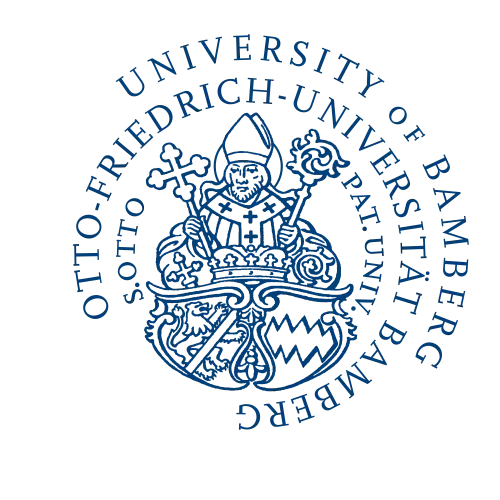
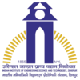
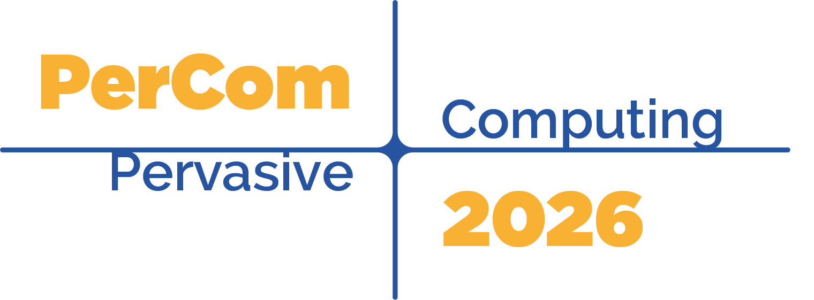
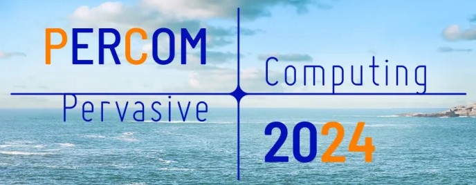
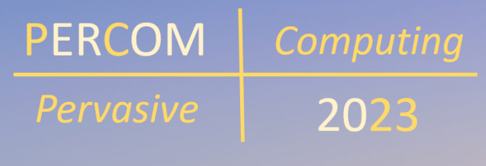
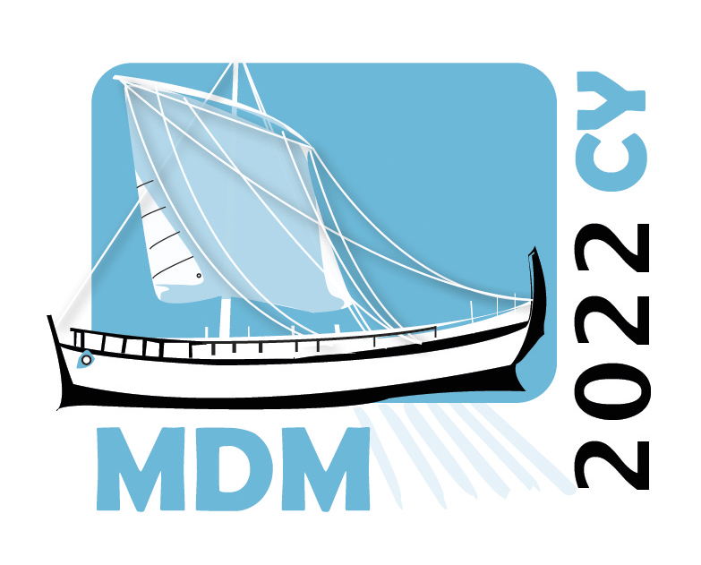
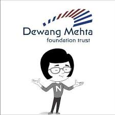
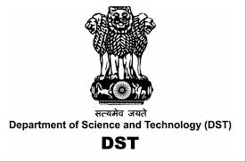
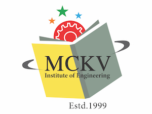

Debasree Das
About
I am currently a Postdoctoral Researcher at the Chair of Mobile Systems, University of Bamberg, Germany. I completed my Ph.D. in Computer Science and Engineering from the Indian Institute of Technology (IIT) Kharagpur in 2024, where I was affiliated with the two eminent research groups, Ubiquitous and Networked Systems Lab (UbiNET) and the Complex Network Research Group (CNeRG). My research interests lie in ubiquitous sensing, mobility data analytics, privacy and trust in pervasive systems and intelligent transportation systems, driven by a passion for creating practical, human-centered solutions through data and system design. Before my doctoral journey, I earned my Master’s degree in Computer Science from Indian Institute of Engineering Science and Technology (IIEST) Shibpur, where I graduated as the departmental topper in 2018. Beyond research, I have a deep appreciation for arts and crafts and often spend my leisure time painting - a creative pursuit that continues to inspire my academic work with balance and perspective.
Research Activity
June 2024 - Present
Working Towards Developing Privacy and Trust-aware Smary City Solutions
Working Towards Developing Anonymization Techniques for Securing City-wide Intermodal Trajectory Data under the supervision of Prof. Daniela Nicklas, Chair of Mobile Systems, University of Bamberg, Germany, also knows as Otto-Friedrich-Universität Bamberg, Germany.
July 2019 - May 2024
Developing Intelligent Transportation System
Developed a pervasive dashcam using different causal inferencing techniques for Understanding the Driving Behavior through Analysing the Interaction between Different Driving Maneuvers and On-road Objects to Sense the Driving Environment under the supervision of Prof. Bivas Mitra and Prof. Sandip Chakraborty in the Department of Computer Science and Engineering, Indian Institute of Technology, Kharagpur. Thesis Title: Exploring Spatiotemporal Data for Contextual Analysis of Driving Behavior: Towards Developing Ubiquitous Platforms for Road Safety. Link
Publication
2026
Debasree Das, Leonie Ackermann, Katharina Ebner, Oleksandr Huba, Syed Ibrahim Khalil, Daniela Nicklas, “Oh, Be Safe: A Field Study for Crowdsensed Cycling Safety Maps”, in PerCom Work in Progress (WiP) 2026, Pisa, Italy. (To Appear)
Michael Freitag, Nikolai Johannes Kulczak, Leonie Ackermann, Debasree Das, Katharina Ebner, Oleksandr Huba, Faizan Hussain, Daniela Nicklas, “Towards Trustworthy Crowdsensing: Simulating OpenBikeSensor Data Collection with SUMO”, in PerCom Workshops 2026, Pisa, Italy. (To Appear)
Daniela Nicklas, Leonie Ackermann, Debasree Das, Tatsuya Amano, Hamada Rizk, Hirozumi Yamaguchi, “Challenges for Federated Crowd Management in Smart Cities", in Companion Proceedings of the 27th International Conference on Distributed Computing and Networking 2026.
2025
Debasree Das, Rahat Rafiq, Daniela Nicklas, “Does One Noise Fit All? Analyzing Utility in Transportation Mode-Based Anonymization”, in IEEE SmartComp 2025.
Debasree Das, Shameek Bhattacharjee, Sandip Chakraborty, Bivas Mitra, Sajal K. Das, “Pervasive Sensing to Correlate Vehicle Driving Behavior with City-Scale Traffic Dynamics", in Pervasive Computing 2025", F E A T U R E A R T I C L E (April-June 2025).
Lina Steger, Leonie Ackermann, Debasree Das, Alexandra Kapp, Daniela Nicklas, “Leveraging Gaussian Noise for Balancing Differential Privacy Guarantees and Utility in Mobility Reports”, in IEEE PerCom Workshops, 2025.
Bishal Bhandari, Debasree Das, “On-demand Context Aware Bus Route Profiling: A Study on Enhancing Urban Mobility”, in BTW Data Driven Smart City Science and Transferability (DaSCiT), 2025.
2024
Debasree Das, Sandip Chakraborty, and Bivas Mitra, “DriveR: Towards Generating a Dynamic Road Safety Map with Causal Contexts”, in ACM MobileHCI, vol. 2024.
Debasree Das, Shameek Bhattacharjee, Sandip Chakraborty, Bivas Mitra and Sajal K. Das, “Early Detection of Driving Maneuvers for Proactive Congestion Prevention”, in IEEE PerCom, vol. 2024.
2023
Sugandh Pargal, Debasree Das, Bikash Sahoo, Bivas Mitra, and Sandip Chakraborty, “GRIDS: Personalized Guideline Recommendations while Driving Through a New City”, in ACM Transactions on Recommender Systems (TORS), July 2023.
Debasree Das, Sandip Chakraborty, Bivas Mitra, “DriCon: On-device Just-in-Time Context Characterization for Unexpected Driving Events”, in IEEE PerCom, vol. 2023.
Debasree Das, Pragma Kar, Sugandh Pargal, Sandip Chakraborty, “FreeSteer: A Smartphone Application for Detecting Anxiety in Novice Drivers through Smart Glasses”, in IEEE COMSNETS, vol. 2023.
2022.
Debasree Das, Sugandh Pargal, Sandip Chakraborty, Bivas Mitra, “DriBe: On-road Mobile Telemetry for Locality-neutral Driving Behavior Annotation”, in IEEE MDM, vol. 2022.
Debasree Das, Sugandh Pargal, Sandip Chakraborty, Bivas Mitra, “Why Slammed the Brakes On? Auto-annotating Driving Behaviors from Adaptive Causal Modeling”, in IEEE PerCom Workshops, vol. 2022.
Rohit Verma, Sugandh Pargal, Debasree Das, Tanusree Parbat, Sai Shankar Kambalapalli, Bivas Mitra, and Sandip Chakraborty, “Impact of Driving Behavior on Commuter’s Comfort During Cab Rides: Towards a New Perspective of Driver Rating”, ACM Transactions on Intelligent Systems and Technology (TIST), 2022.
2021
Susanta Chakraborty, Samya Muhuri, Debasree Das, “Detection of constant member and overlapping community from dynamic literary network”, Social Network Analysis and Mining, 2021.
2019
Samya Muhuri, Debasree Das, Susanta Chakraborty, “Line Encoding Based Method to Analyze Performance of Indian States in Road Safety”, International Conference of Computational Intelligence In Pattern Recognition (CIPR 2019), 19-20 Jan, 2019.
2017
Samya Muhuri, Debasree Das, Susanta Chakraborty, “An Automated Game Theoretic Approach For Co-Operative Road Traffic Management in Disaster”, IEEE International Symposium on Nanoelectronic and Information System, 2017(IEEE-iNIS), 18-20 Dec, 2017, India.
Recent Research Talks
2024 - Present
- Research visit at Università degli Studi di Modena e Reggio Emilia (UNIMORE), Italy, 2026 on "Towards Dynamic Multimodal Road Safety Maps: From Driving Behavior to Cyclist Stress Sensing"
- Research talk at Hochschule Esslingen – University of Applied Sciences 2025 on "Does One Noise Fit All? Outlook to E‐Scooter Use Case in Bamberg"
- Reseach talk at IPVS group, University of Stuttgart 2024 on "Harnessing Anonymized Mobility Data for Smarter Micromobility and Urban Transport Solutions"
- Invited talk at the ACM India ARCS 2024 on "Proactive Congestion Mitigation using Anomalous Driving Maneuvers"
Experience
2024 - Present
Research Assistant

Currently working for Explanym funded by Federal Ministry of Foreign Affairs Research, Technology and Space (BMFTR) and European Union focusing explainable anonymization on human mobility data at University of Bamberg, Germany
2019 - 2024
Teaching Assistant
Worked as an Teaching Assistant in the department of Computer Science & Engineering, Indian Institute of Technology, Kharagpur from July, 2019 to May, 2024.
May 2023 - October 2023
Visiting Scholar
Visited Computer Science department of Missouri University of Science and Technology, USA for 6 months to work on the field of Sensing Driving Behavior for Identification of Non-recurrent Driving Events hosted by Prof. Sajal K. Das.
2018 - 2019
Associate
Worked as an Associate in UI and backend development using technologies such as J2EE(Java 8, HTML5, CSS, Bootstrap, JavaScript, Ajax) in Internal Project and used SmallTalk language in Visual Age SmallTalk Tool for project in Insurance domain at Cognizant Technology Solutions India Private Ltd. from September, 2018 to July, 2019.
2017 - 2018
Teaching Assistant

Worked as an Teaching Assistant in the department of Computer Science & Engineering, Indian Institute of Engineering Science and Technology, Shibpur from July, 2017 to June, 2018.
Achievements
2026

Recieved Best Work-in-Progress Paper Award at IEEE PerCom 2026 for the paper titled, "Oh, Be Safe: A Field Study for Crowdsensed Cycling Safety Maps". Award Link
Received N2Women travel grant funded by Techinal Committee on Parallel Processing (TCPP) for hosting N2Women at IEEE PerCom 2026.
2024

Received student travel grants from LRN COMSNETS Travel Grant, IEEE TCPP, DST SERB for participating in IEEE PerCom 2024.
2023

Received student travel grants from IEEE CS TCCC, ACM IARCS, Institute Travel Support for participating in IEEE PerCom 2023.
2022

Recieved Best Paper Runner Up Award at IEEE MDM for the paper titled, "DriBe: On-road Mobile Telemetry for Locality-neutral Driving Behavior Annotation". Award Link

Recieved Second Winner Prize at IBM, Maitreyee for research vlog.
2018
Awarded Institute Silver Medal at IIEST, Shibpur for ranking 1st in Computer Science and Engineering Department in M.Tech., in December, 2018.
2016

Received Shri Dewang Mehta IT Award, in February, 2016
2010

Received Inspire Award Warrant from Department of Science and Technology, Government of India, 2010.
Other Academic Roles
2021 - Present
- Serving as Co-Orgnanizer for IEEE TrustSense Workshop affiliated to IEEE PerCom 2026 (A*)
- Serving in ACM TOCHI Distinguished Reviewer Board
- Serving as Publicity Co-Chair for SMARTCOMP 2026
- Serving as Graduate Forum Co-Chair & TPC member for COMSNETS 2026 and 2027
- Serving as Publicity Co-Chair for ICDCN 2026
- Serving as a TPC member for IEEE AIoT 2025
- Serving as a TPC member for IEEE HiPC Student Research Symposium 2025
- Serving as a TPC member for IARIA Congress 2025
- Served as a TPC member for UbiComp workshops 2025
- Served as a Co-Chair for BTW 2025 Early Career Researcher Workshop. Message from the Chairs
- Served in the CoI TPC for PerCom workshops 2025
- Served as a Web Chair for IEEE COMSNETS 2025
- Served as external reviewer for IEEE PerCom’24/25, ACM CHI’25/26, ACM CSCW’24/25, ACM MobileHCI’25/26, IEEE InfoCom’24/25, ACM ICMI’23, Elsevier PMC’22-25, IEEE TITS’21, WWW’22, AAAI’22, COMSNETS’22, CODS-COMAD’22
Education
Indian Institute of Technology, Kharagpur
July 2019 - May 2024
Doctor of Philosophy (Ph.D.) in Computer Science and Engineering, awarded on 30th December, 2024
Indian Institute of Engineering Science and Technology, Shibpur
2016 - 2018
Master Degree in Computer Science and Engineering
M.C.K.V Institute of Engineering

2012 - 2016
Bachelor Degree in Computer Science and Engineering